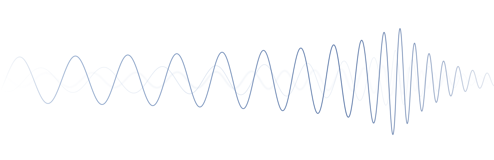

Ph.D. Researcher · LIGO–Virgo–KAGRA Collaboration
Manvi Jain
Gravitational-wave data analysis · University of Massachusetts Dartmouth
Physics PhD student and member of the LIGO-Virgo-KAGRA (LVK) Collaboration, working on matched-filter searches for gravitational waves from compact binary coalescences. Current research builds template banks for precessing and tidally deformed binaries, develops waveform models for compact binaries in modified gravity, and uses the analysis pipelines (SGNL/GstLAL) that detect these signals.
About
I am a physics Ph.D. researcher at UMass Dartmouth, advised by Prof. Sarah Caudill, and a member of the LIGO–Virgo–KAGRA (LVK) Collaboration.
My work sits at the point where waveform theory meets data analysis. A matched-filter search can only find a signal it already has a template for, so the physics you choose to model, whether it is spin precession, tidal deformation, or both, decides what the detectors are able to see. I build banks for those templates, test how well they recover injected signals, and run the searches themselves with the SGNL/GstLAL pipelines. I am also currently working on precessing waveforms in dynamical Chern–Simons gravity.
Research interests
Current work
Template banks
Tidal template banks for binary neutron stars
Matched-filter banks that carry tidal deformability, plus the injection campaigns that measure how much signal they actually recover.
Manuscript in preparation
Tests of gravity
Precessing binaries in dynamical Chern–Simons gravity
Analytic waveform equations for precessing compact binaries beyond general relativity, and a Fisher-matrix forecast of what the detectors could constrain.
Manuscript in preparation
Searches on real data
Precessing binary black hole searches
GstLAL searches over LIGO O1 and O2 data, a reusable precessing-harmonics waveform module, and a study of how weak glitches bias signal recovery.
PRL 133, 201401 (2024)
Recent
-
Head Teaching Assistant, Electricity & Magnetism Laboratories
Fall 2026 -
Poster — Gravitational Wave Physics and Astronomy Workshop (GWPAW)
2025 -
Doctoral Fellowship, UMass Dartmouth
2025–2026 -
Co-author on a Physical Review Letters search for heavily precessing binary black holes
2024